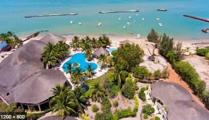
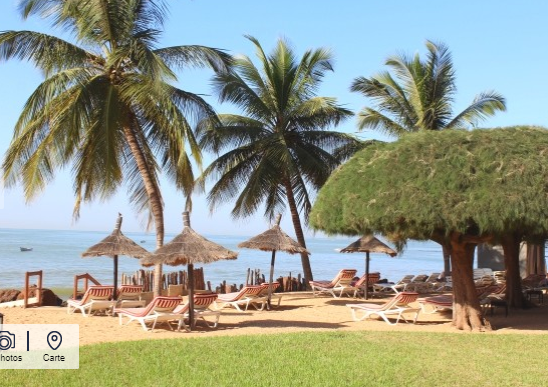
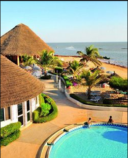
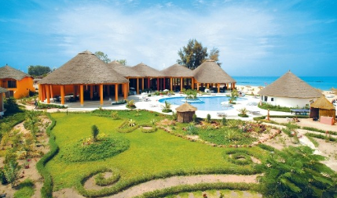

SALY PORTUDAL
SALY se situe au SENEGAL, a un peu plus de 80 km au sud de Dakar.
C'est une station balnéaire léchée par l'océan atlantique.
SALY PORTUDAL, dans sa forme longue, se trouve sur la petite-cote sénégalaise.
C'est l'une des destinations les plus prisées de sénégal.
De début octobre à fin juin c'est la saison sèche, mais dès mars la chaleur peut faire accablante malgré les courants marins rafraichissants.
Lui succède la saison des pluies, qui commence en juillet et finit en septembre.
SALY est connue pour sa longue plage bordée de beaux hotels, de cafés et de restaurants.
C'est une véritable station balnéaire née au debut des années 80 près de l'ancien comptoir portugais:SALY PORTUDAL, qui c'est largement agrandie!
Forte d'une expérience conséquente dans le domaine du tourisme, de nombreuses activités sont proposées pour toute la famille et pour tous les gouts.
C'est aussi un centre actif de peche sportif qui attire beaucoup de monde.
Vous qui avez toujours souhaitez connaitre l'AFRIQUE et etes amateurs de farniente, BIENVENU A SALY.
Ici, on s'amuse, on se baigne, on joue, on fait du sport, on s'instruit,on fait plaisir aux grands et aux petits!
N'HESITEZ PLUS VENEZ VITE!
 
DES ENDROITS PARADISIAQUES
Un voyage à SALY c'est tout le plaisir d'un voyage africain et le bohneur d'une ville aux paysages paradisiaques.
Craquez pour la belle SALY, ses habitants, ses plages somptueuses, en un mot, faites vous plaisir!
 
OUI! ON EST AU SENEGAL A SALY PORTUDAL